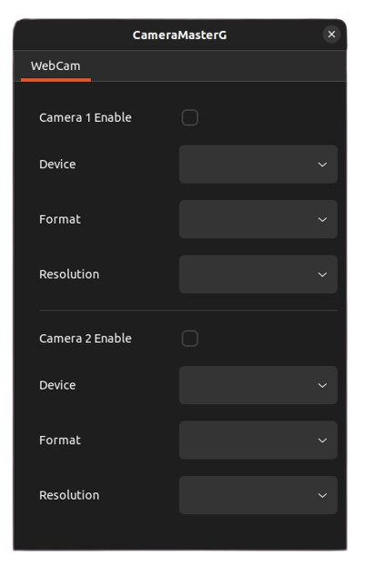
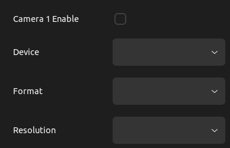

Setting Page
Description

이 페이지에서는 Cam1과 Cam2 두 개의 카메라를 설정하고, 활성화 여부에 따라 라이브 송출을 결정할 수 있습니다. 또한, 연결된 카메라의 정보 조회 및 저장 기능과 사용자 맞춤형 카메라 설정 기능을 제공합니다.
Video 정보 저장
연결된 카메라의 정보를 V4l2를 통해 실시간으로 확인할 수 있습니다.
지원되는 해상도 및 프레임 속도(FPS) 정보를 저장하여 활용할 수 있습니다.
사용자가 직접 원하는 해상도를 선택하여 설정할 수 있습니다
📌예제: 카메라 정보 조회 (v4l2 활용)
Listing video devices...
Device: <Device name> 100 (/dev/video0)
Format: YUYV 4:2:2
Resolution: 640x480 fps: 30
Resolution: 160x120 fps: 30
Resolution: 176x144 fps: 30
Resolution: 320x176 fps: 30
Resolution: 320x240 fps: 30
Resolution: 352x288 fps: 30
Resolution: 432x240 fps: 30
Resolution: 544x288 fps: 30
Resolution: 640x360 fps: 30
Resolution: 752x416 fps: 5
Resolution: 800x448 fps: 5
Resolution: 800x600 fps: 5
Resolution: 864x480 fps: 5
Resolution: 960x544 fps: 5
Resolution: 960x720 fps: 5
Resolution: 1024x576 fps: 5
Resolution: 1184x656 fps: 5
Resolution: 1280x720 fps: 5
Resolution: 1920x1080 fps: 5
Format: Motion-JPEG
Resolution: 640x480 fps: 30
Resolution: 160x120 fps: 30
Resolution: 176x144 fps: 30
Resolution: 320x176 fps: 30
Resolution: 320x240 fps: 30
Resolution: 352x288 fps: 30
Resolution: 432x240 fps: 30
Resolution: 544x288 fps: 30
Resolution: 640x360 fps: 30
Resolution: 752x416 fps: 30
Resolution: 800x448 fps: 30
Resolution: 800x600 fps: 30
Resolution: 864x480 fps: 30
Resolution: 960x544 fps: 30
Resolution: 960x720 fps: 30
Resolution: 1024x576 fps: 30
Resolution: 1184x656 fps: 30
Resolution: 1280x720 fps: 30
Resolution: 1920x1080 fps: 30
➡ 위 정보를 기반으로 카메라 설정을 보다 편리하게 구성할 수 있습니다.
Camera 설정

카메라 설정 페이지에서는 사용자가 직접 카메라의 주요 매개변수를 조정할 수 있습니다.
설정된 Device, Format, Resolution을 기반으로 프레임을 조정할 수 있습니다.
출력 해상도 및 **프레임 속도(FPS)**를 설정하여 원하는 영상 품질을 유지할 수 있습니다.
설정을 실시간으로 적용하여 최적의 영상 환경을 조정할 수 있습니다.